Lecture 7 — YOLO (You Only Look Once)
Slides © Dr. Khaled M. ElSayed, Zewail City. 70 slides (incl. handwritten in-class notes).
s7.1 — The YOLO Concept (single-pass detector)
What problem is YOLO solving?
Why it matters: classical detectors (e.g. sliding window, R-CNN) feed many image crops through a classifier — that is slow. YOLO converts detection into a single regression problem: one CNN pass over the image emits all bounding boxes + classes at once. Hence the name: You Only Look Once.
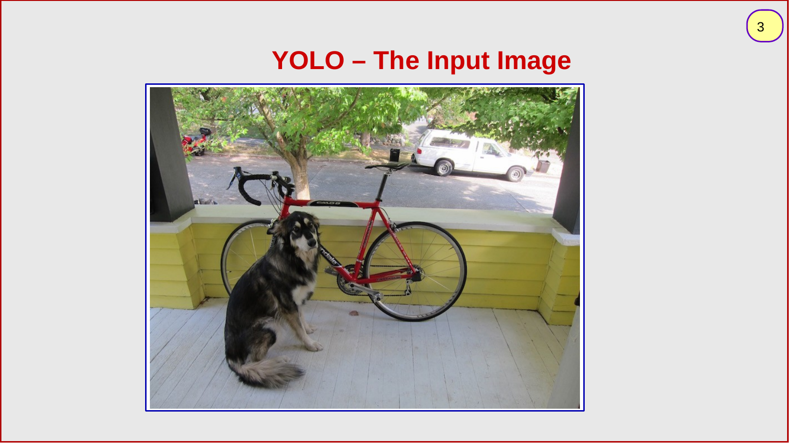
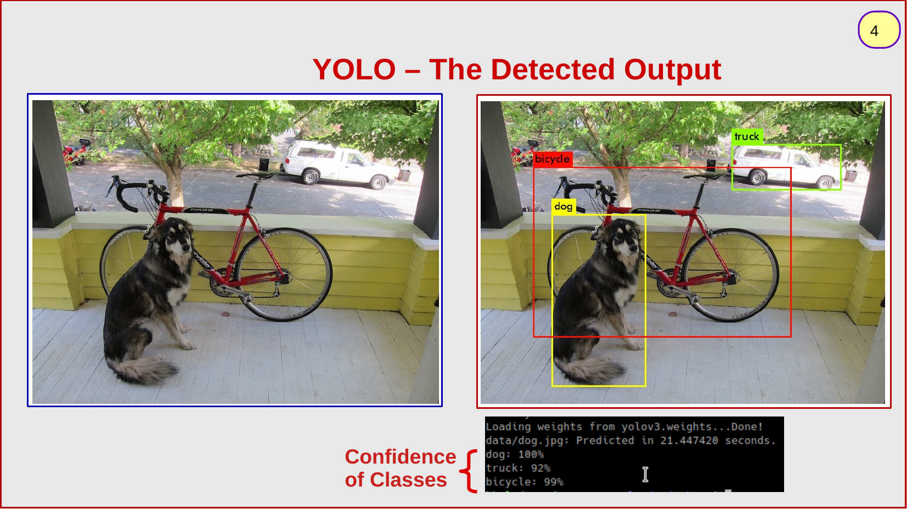
dog 100%, truck 92%, bicycle 99%.YOLO is trained on standard object-detection datasets. Three classic ones appear in the slides:
- VOC 2007 / 2012 — 20 classes (person, cat, dog, car, chair, bottle…).
- MS COCO — 80 classes (book, apple, teddy bear, scissors…).
- ImageNet-1000 — 1000 fine classes (German shepherd, golden retriever…).
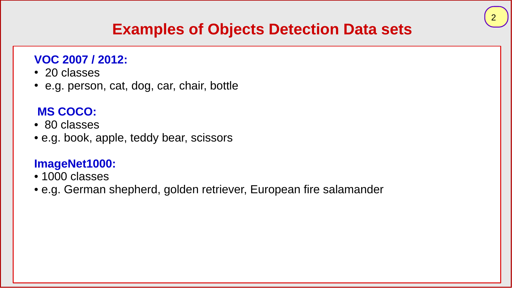
Review — the sliding-window detector YOLO replaces
Why it matters: understanding what was wrong with sliding windows tells you exactly why the YOLO grid + anchors design was invented.
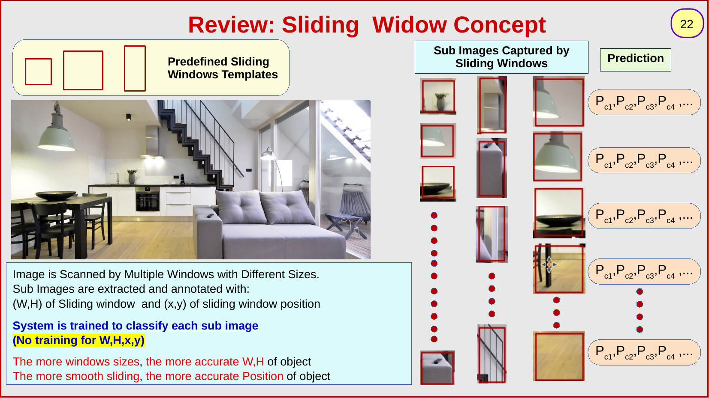
In sliding-window detection the system is trained only to classify each crop; the (W,H,x,y) of the window itself is not learned. The more window sizes and the smoother the slide, the better the box — but inference is very slow.
YOLO at a glance — the $S\times S$ grid + "responsible cell"
Why it matters: the grid + responsible-cell rule is the heart of YOLO; every output number is keyed to a cell.
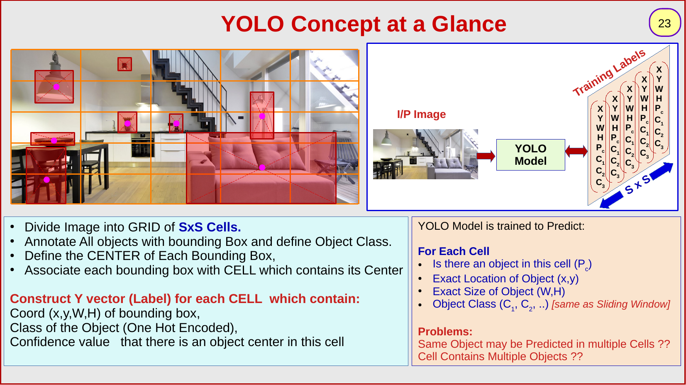
- Divide image into a grid of $S\times S$ cells (e.g. $13\times 13$).
- For every ground-truth box: find its centre $(x_c, y_c)$; the cell that contains the centre is the responsible cell.
- Each cell's label vector contains: $[p_c,\ b_x,\ b_y,\ b_w,\ b_h,\ c_1,\dots,c_N]$ — i.e. "is there an object?", the bounding box, and the one-hot class.
- The CNN learns to predict this label vector at every cell in one forward pass.
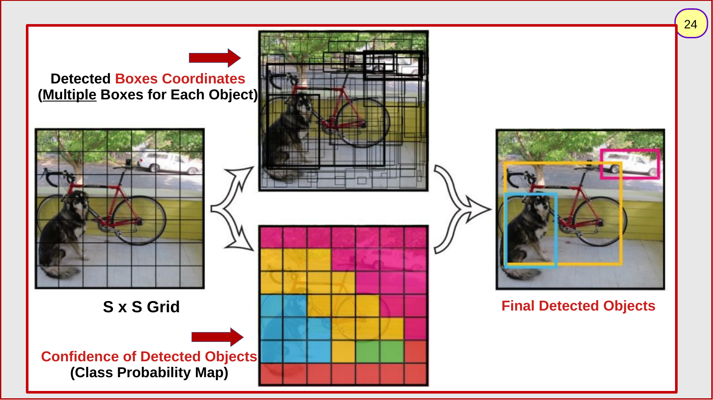
The "responsible cell" rule in one sentence
Each object in a training image is assigned to the single grid cell that contains the centre (midpoint) of the object's bounding box. All other cells output $p_c = 0$ for that object.
Common exam traps
- "The responsible cell is the one with the largest overlap." — False. It is the one that contains the centre, not the largest overlap.
- "With one anchor per cell, YOLO can detect $S\times S \times M$ objects." — With one anchor per cell the cap is just $S\times S$ (one object per cell).
- "YOLO does two passes — one for boxes, one for classes." — Single pass. That is the entire point of the name.
Answer
Each cell is $416/13 = 32$ px wide. The responsible cell is $(\lfloor 100/32 \rfloor,\ \lfloor 80/32 \rfloor) = (3, 2)$ (column 3, row 2, zero-indexed).Answer
Only one — the cell stores a single $[p_c, b_x, b_y, b_w, b_h, c_1,\dots]$ vector. This is exactly the motivation for anchor boxes (s7.3).s7.2 — Cell-based vs Image-based encoding of $(b_x,b_y,b_w,b_h)$
Why it matters: two conventions appear in textbooks and slides. They predict the same box but the numbers look different. Pick the wrong one on the exam and your value of $b_x$ is wrong.
[1] Cell-based encoding (the one the YOLO paper uses)
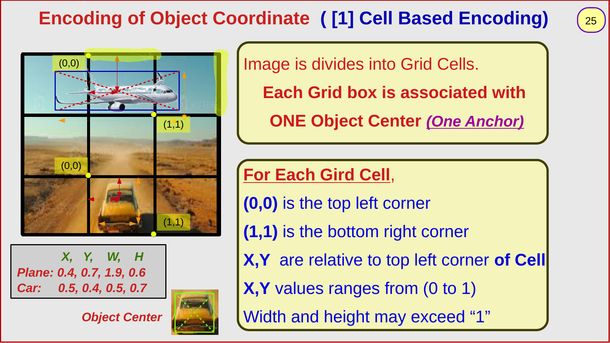
- $(0,0)$ = top-left corner of the cell.
- $(1,1)$ = bottom-right corner of the cell.
- $b_x, b_y \in [0,1]$ — fraction of the cell width/height.
- $b_w, b_h$ — measured relative to the whole image; may exceed 1 (large objects are bigger than one cell). On the slide:
Plane: 0.4, 0.7, 1.9, 0.6→ centre at 40% of cell width, 70% of cell height; width = 1.9 cells; height = 0.6 cells.
[2] Image-based encoding (alternative)
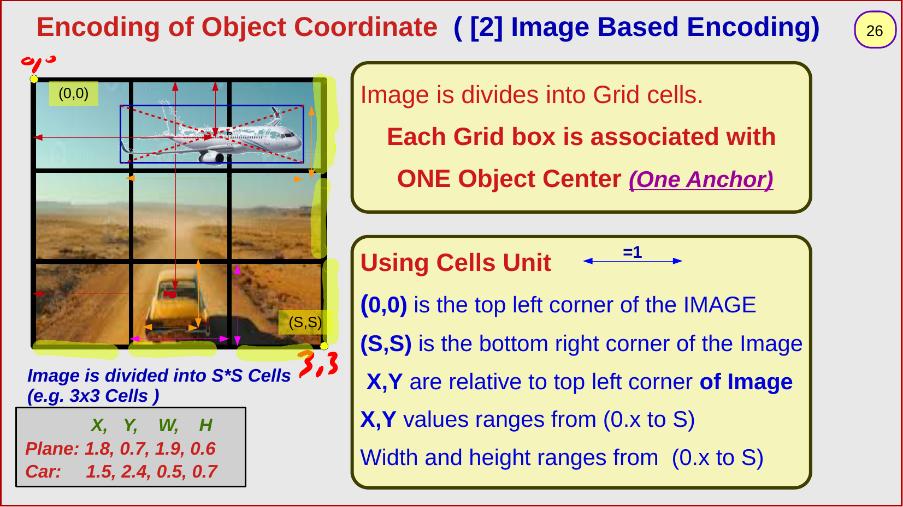
- $(0,0)$ = top-left of the image; $(S,S)$ = bottom-right of the image.
- $b_x, b_y$ are measured from image origin, in cell-width units → range $[0,S)$.
- $b_w, b_h$ also in cell-width units → range $[0,S)$.
- Slide example:
Plane: 1.8, 0.7, 1.9, 0.6— same object, different units (cell column 1.8, row 0.7).
Reconciling the two — same object, two number sets
Worked example — image 416×416, grid 13×13, object centre at pixel (100, 80), object size 50×80 px
Cell side = $416/13 = 32$ px.Responsible cell index $(c_x, c_y) = (\lfloor 100/32 \rfloor, \lfloor 80/32 \rfloor) = (3, 2)$.
Cell-based:
$b_x = (100 \bmod 32)/32 = 4/32 = 0.125$
$b_y = (80 \bmod 32)/32 = 16/32 = 0.5$
$b_w = 50/416 \approx 0.120$ (fraction of image)
$b_h = 80/416 \approx 0.192$
Image-based (cell units):
$b_x = 100/32 = 3.125$
$b_y = 80/32 = 2.5$
$b_w = 50/32 \approx 1.5625$
$b_h = 80/32 = 2.5$
Trap
- Mixing the two encodings on the same exam question. Read the question: "relative to cell" = encoding 1; "in cell units, from image top-left" = encoding 2.
- "$b_w$ is always < 1." — False. The width is relative to the image (or in cell units); large objects can exceed 1 cell.
Answer
Image x = $(4 + 0.9) \cdot 32 = 156.8$ px. Image y = $(2 + 0.05) \cdot 32 = 65.6$ px.s7.3 — Anchor Boxes
Why anchors? (the two failure cases of one-anchor YOLO)
Why it matters: with one anchor per cell, the max number of detected objects = number of cells and you cannot disambiguate two overlapping objects with the same centre. Anchors fix both.
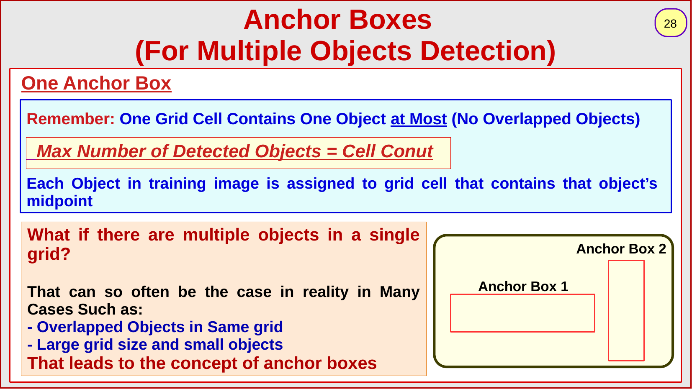
Two situations break a one-anchor cell:
- Overlapping objects whose centres fall into the same cell (the classic "person standing in front of a car" picture).
- Many small objects when the grid is coarse — many objects per cell.
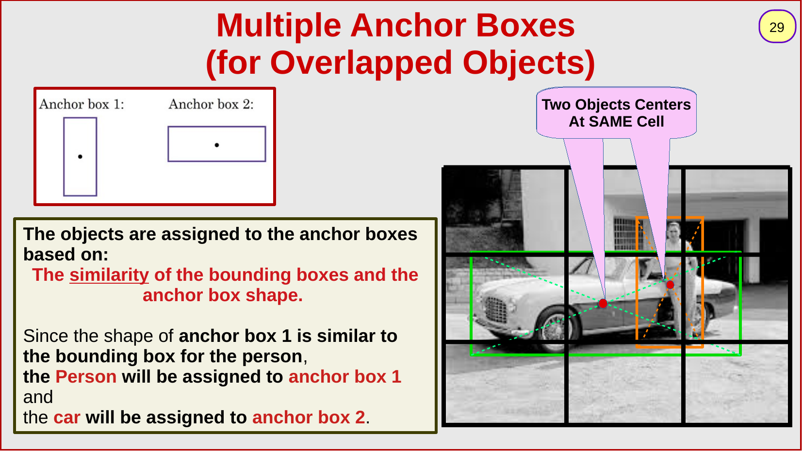
Definition — anchor box
An anchor box is a pre-defined template (width, height, aspect ratio). Each cell predicts a set of $M$ anchors, and for each anchor it emits an output vector $[p_c, b_x, b_y, b_w, b_h, c_1,\dots,c_N]$.
The network's $b_x, b_y, b_w, b_h$ are interpreted as offsets / refinements from the anchor's prior shape rather than absolute coordinates — this gives the network a head start ("you only need to learn the residual") and naturally specialises each anchor to one aspect ratio.
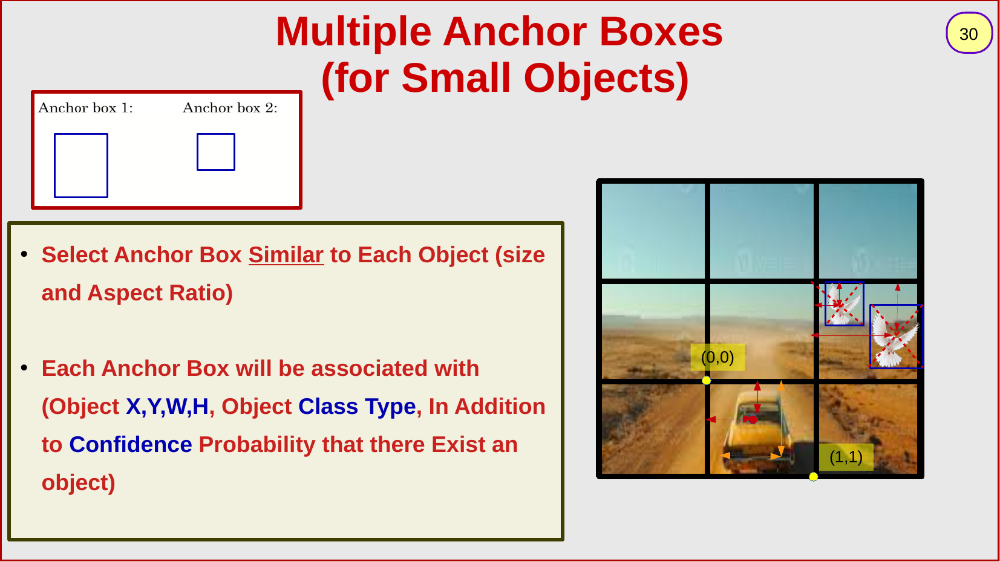
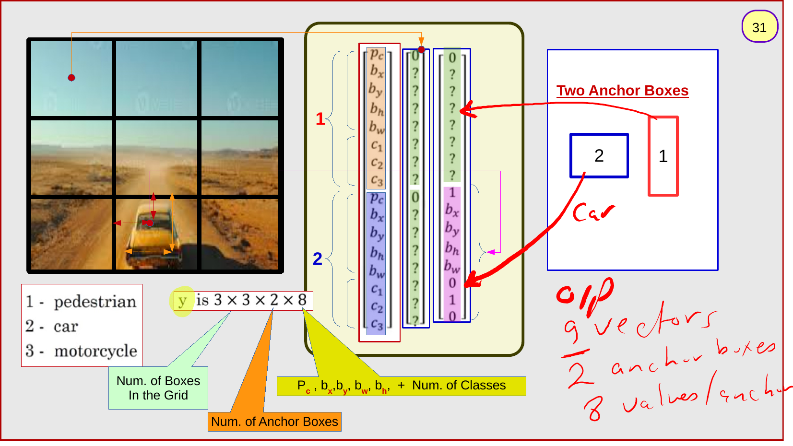
Assigning the ground truth to the right anchor
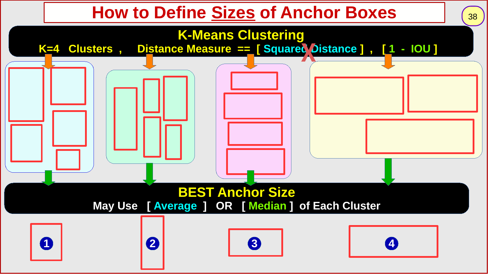
Procedure (per ground-truth box):
- Compute IoU($\text{GT}$, $\text{anchor}_k$) for $k = 1\dots M$.
- Pick the anchor $k^* = \arg\max_k \text{IoU}(\text{GT}, \text{anchor}_k)$.
- Fill that anchor's slot in the responsible cell's label with $p_c = 1$ and the box coords; all other anchors in the same cell get $p_c = 0$.
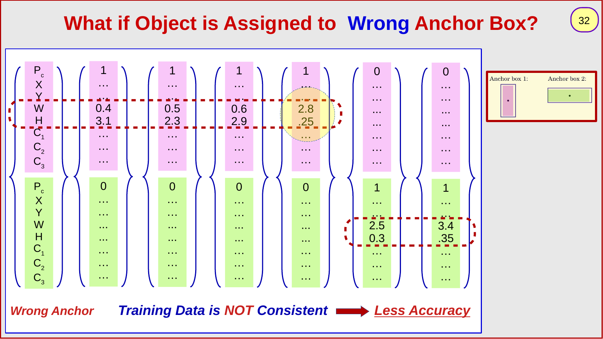
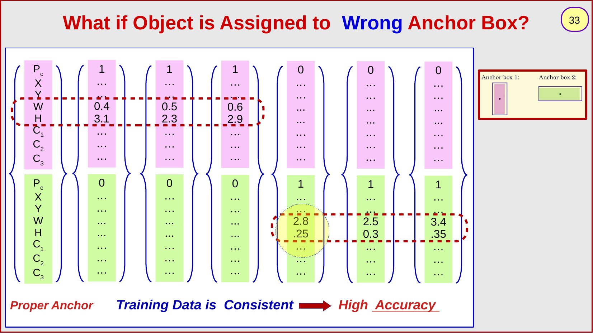
Picking anchor sizes — k-means on the training boxes
Why it matters: hand-picking $M$ anchor sizes is brittle. YOLOv2 introduced clustering ground-truth boxes to learn good priors.
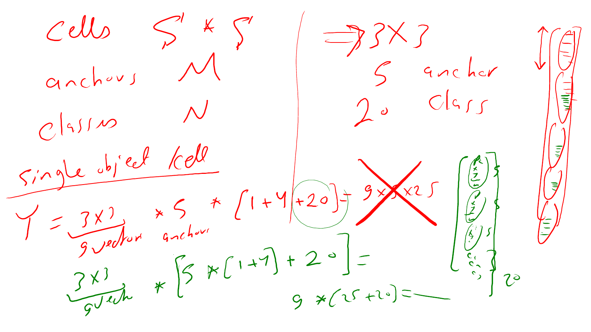
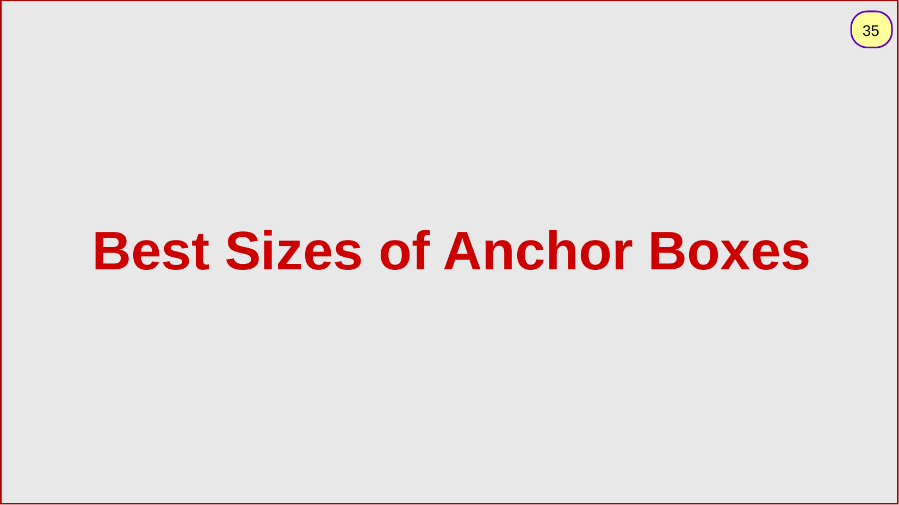
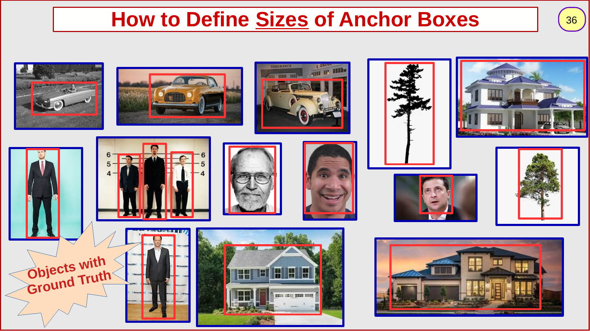
Picking the number of anchors $K$
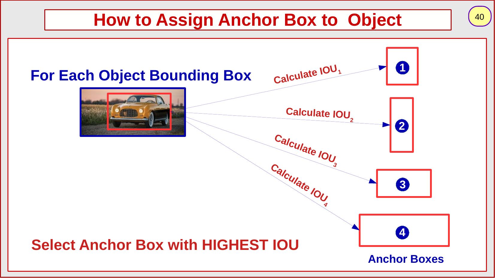
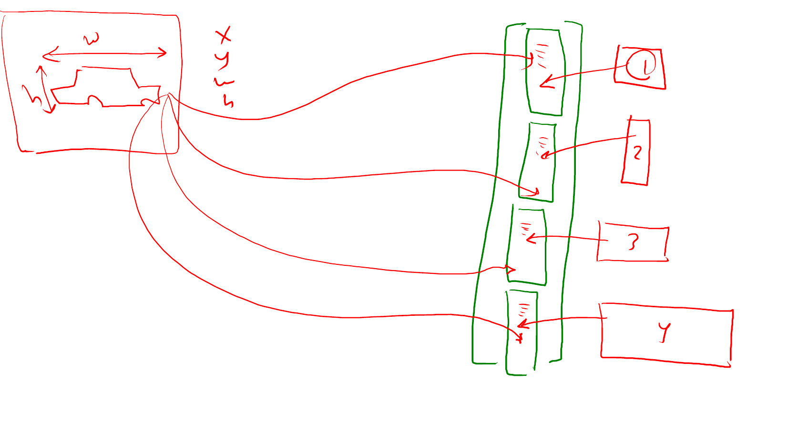
- Run k-means for $K = 2, 3, 4, \dots$ on training ground-truth boxes.
- Assign each GT box to its nearest anchor (highest IoU).
- Compute the mean IoU between every GT box and its assigned anchor.
- Plot mean IoU vs $K$; pick the smallest $K$ giving "acceptable" IoU (e.g. $\geq 0.6$).
Why "smallest K"?
More anchors → more output channels → more compute, more parameters, more chance of overfitting. So we want just enough to cover the aspect-ratio diversity of the dataset.
s7.4 — Output Tensor & Post-processing (NMS)
Per-cell output vector
For one anchor: $[\,p_c,\ b_x,\ b_y,\ b_w,\ b_h,\ c_1,\ c_2,\ \dots,\ c_N\,]$ — length $5+N$.
- $p_c$ — objectness / confidence that an object exists in this {cell, anchor} slot.
- $b_x, b_y, b_w, b_h$ — bounding-box position/size (cell-based or image-based — see s7.2).
- $c_1,\dots,c_N$ — per-class probabilities (one-hot for the ground truth).
Two conventions for the full tensor shape — reconcile them
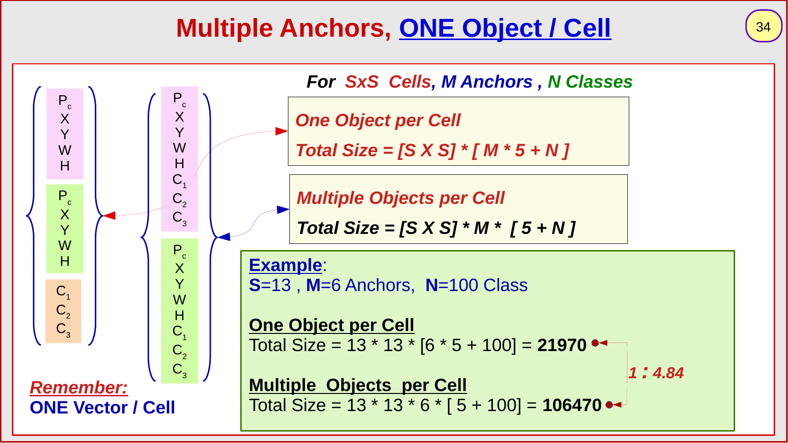
Two conventions appear:
- Shared classes across anchors per cell — only one class vector per cell, all $M$ anchors share it: $$\text{Tensor shape} = S\times S\times (M\cdot 5 + N).$$
- Per-anchor classes — each anchor predicts its own class probabilities: $$\text{Tensor shape} = S\times S\times M\cdot(5 + N).$$
Slide's worked example — $S=13, M=6, N=100$
- Shared classes: $13\times 13 \times (6\cdot 5 + 100) = 169 \times 130 = \mathbf{21{,}970}$.
- Per-anchor classes: $13\times 13 \times 6 \cdot (5 + 100) = 169 \times 630 = \mathbf{106{,}470}$.
- Ratio: $106{,}470 / 21{,}970 \approx 4.84$ — per-anchor classes use ~5× more output values for $N=100$.
Mini-example matching the slide picture (slide 31)
Grid $3\times 3$, $M=2$ anchors, $N=3$ classes (pedestrian, car, motorcycle). Per-anchor classes:
$$3\times 3\times 2\times (5+3) = 3\times 3\times 2\times 8 = 144.$$
This matches "$y\ \text{is}\ 3\times 3\times 2\times 8$" on the slide.
Trap
- Confusing the two formulas — always check whether classes are shared or per-anchor.
- Forgetting the $+5$ comes from $[p_c, b_x, b_y, b_w, b_h]$, not $+4$.
Answer
$7\times 7\times 2\times(5+20) = 49\times 50 = \mathbf{2{,}450}$.Answer
$7\times 7\times(2\cdot 5 + 20) = 49\times 30 = \mathbf{1{,}470}$.Reading the output: class-confidence = $p_c \cdot c_i$
The raw $c_i$ is conditional on an object existing ("if an object is here, what is it?"). To rank detections, multiply by $p_c$:
$$\text{class\_confidence}_i = p_c \cdot c_i.$$
This is the score used to threshold and to break ties in NMS.
Problem: the same object is detected by many boxes
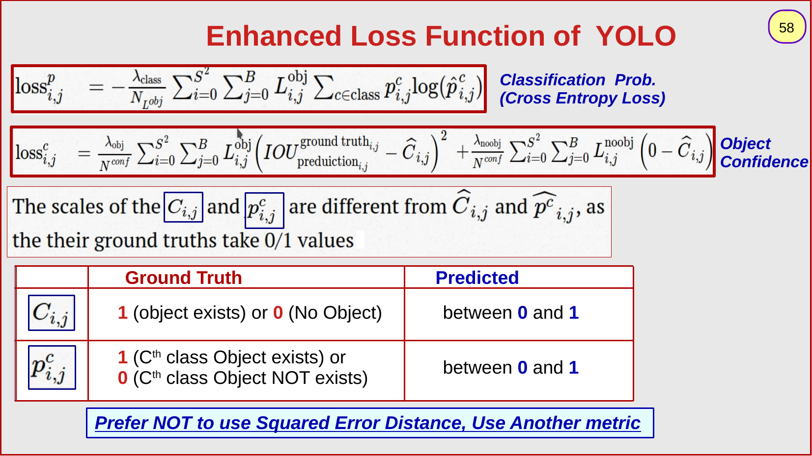
Multiple cells / anchors can all believe the same object is theirs. We need to collapse duplicates → Non-Maximum Suppression (NMS).
Non-Maximum Suppression (NMS) — the algorithm
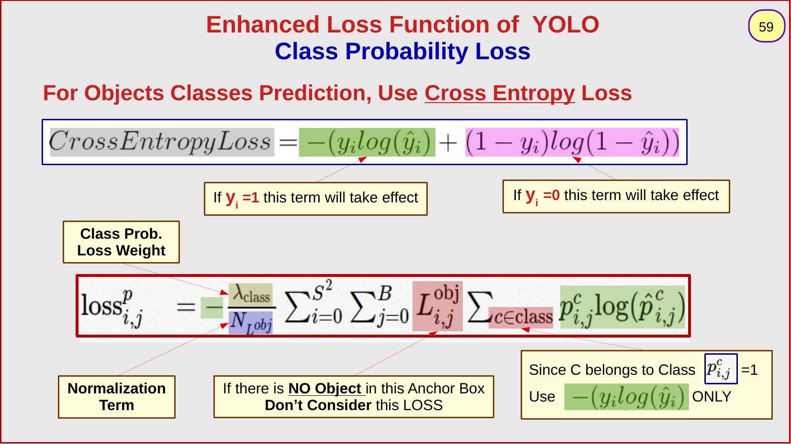
- Filter: discard all boxes with $p_c < 0.6$ (low-confidence).
- Pick the box with the highest $p_c$ as the keeper.
- Compute IoU between this keeper and every other remaining box.
- Discard boxes with IoU $> 0.5$ — too-overlapped duplicates.
- Repeat 2–4 on what remains (excluding already-kept boxes).
- Stop when no box can be discarded.
The thresholds $p_c < 0.6$ and IoU $> 0.5$ are user-defined hyperparameters.
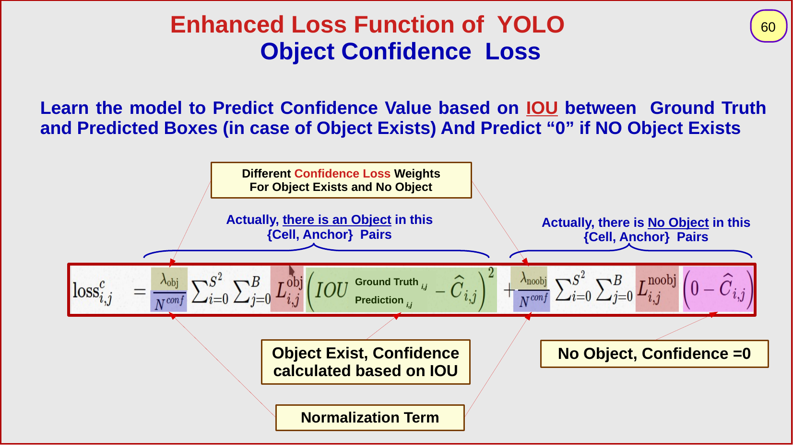
Big picture: NMS is a greedy algorithm
At each iteration: pick the highest-scoring remaining box → suppress everything that overlaps it strongly → repeat.
Per-class NMS
When there are $N$ classes, run NMS separately per class. Otherwise a "dog" box would suppress a partially overlapping "person" box, which is wrong.
Common exam traps
- Reversing the IoU and $p_c$ thresholds: NMS keeps high-$p_c$ boxes and removes high-IoU duplicates.
- Forgetting that NMS is run after a confidence pre-filter — Step 1 throws out most low-quality boxes first.
- "NMS finds the globally optimal subset." — False. It is greedy; it can suppress a box that would have been useful for a near-by smaller object.
Answer
Three: 0.95, 0.82, 0.78. The 0.55 and 0.40 boxes are dropped before NMS even starts.Answer
B is discarded (IoU 0.7 > 0.5). C survives the iteration (IoU 0.3 ≤ 0.5) and competes again in the next round.Full prediction-parsing pipeline (memorise the order)
- Forward pass image through CNN → output tensor of shape $S\times S\times M\times(5+N)$.
- For each (cell, anchor) decode $p_c, b_x, b_y, b_w, b_h, c_1\dots c_N$.
- Compute class-confidence = $p_c \cdot c_i$ for each class.
- Threshold: drop boxes with $p_c < 0.6$ (and/or class-confidence too low).
- Run NMS, separately per class.
- Output: the surviving (box, class, score) triples.
s7.5 — IoU, Architecture, Loss, Versions
Intersection over Union (IoU)
Why it matters: IoU is the universal box-overlap metric — used as quality measure, as a term in the loss, to assign anchors, and inside NMS.
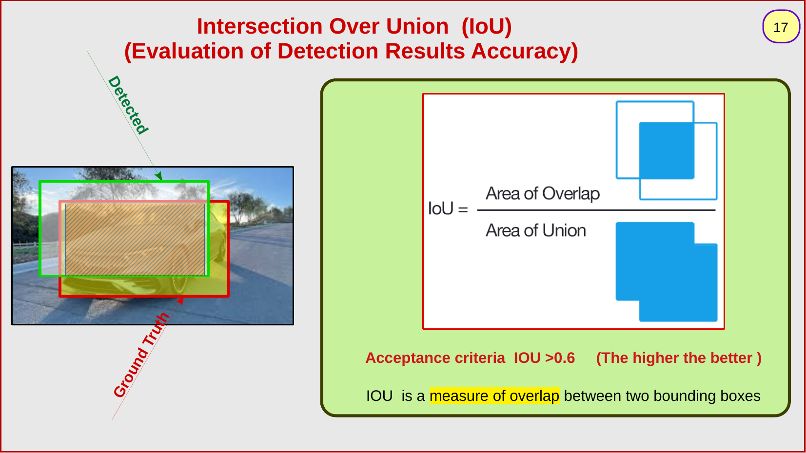
$$\text{IoU} = \frac{\text{Area of Overlap}}{\text{Area of Union}}.$$
The simplest IoU-based loss:
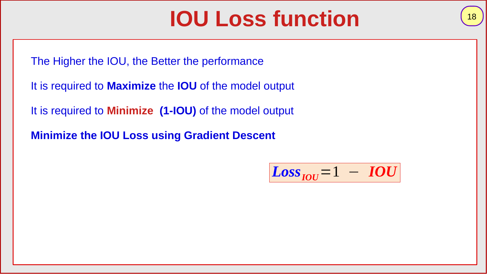
$$\text{Loss}_{\text{IoU}} = 1 - \text{IoU}.$$
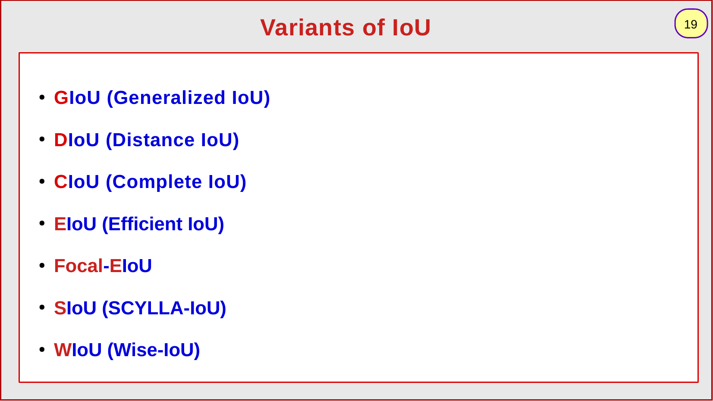
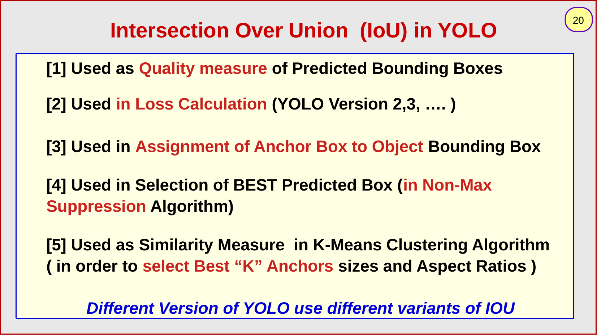
IoU is used in YOLO as: (1) quality measure of predicted boxes, (2) inside the loss, (3) to assign anchor → GT box, (4) to discard duplicates in NMS, (5) as the k-means distance ($1-\text{IoU}$) for choosing anchor priors.
Reference architecture (example: 4 anchors, 20 classes, image 416×416)
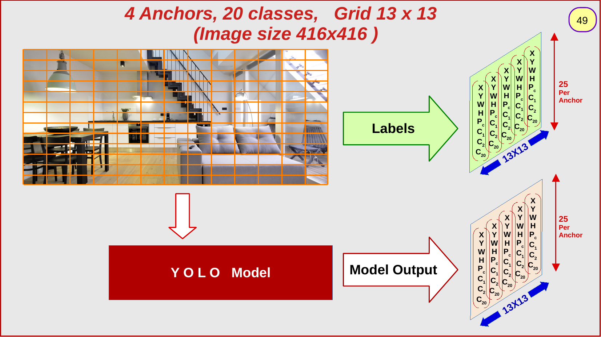
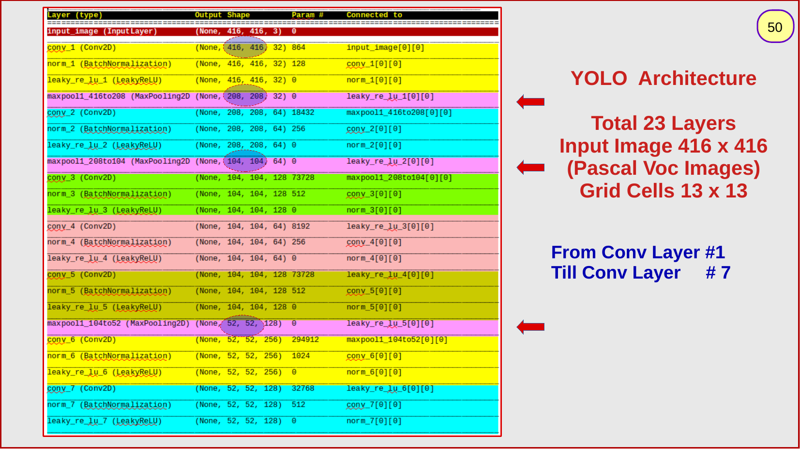
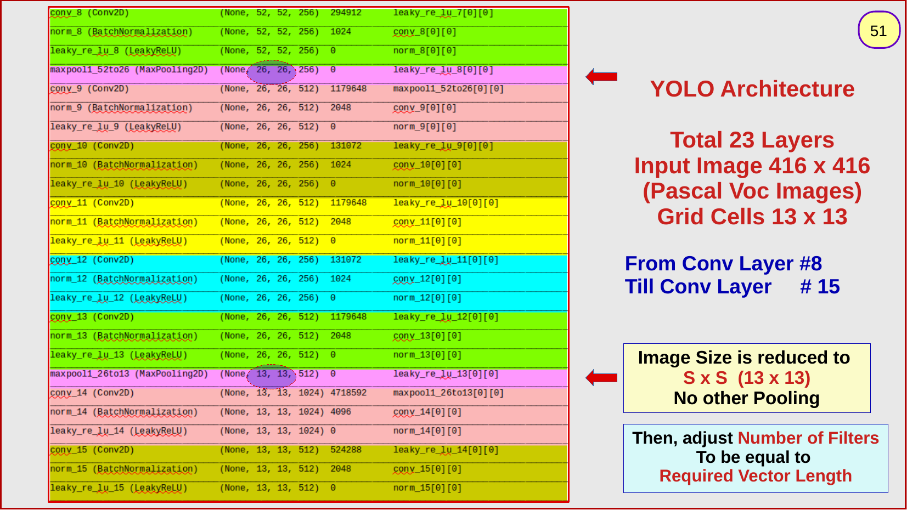
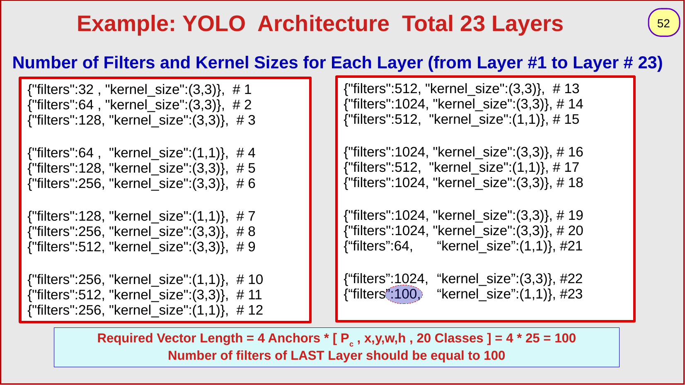
Key architectural points:
- Backbone is fully convolutional (e.g. DarkNet-style in YOLOv2/v3). It extracts features for layers $1\dots N{-}1$, then the last conv encodes the image into $S\times S$ vectors.
- The required length of the last layer's feature vector = number of filters in the final conv layer = $M\cdot(5+N)$ (per-anchor classes) or $M\cdot 5 + N$ (shared classes).
- For the example $M=4, N=20$: final layer has $4\cdot(5+20) = 100$ filters.
- $13\times 13$ comes from $416/32 = 13$ — five $2\times$ max-pools reduce 416 → 208 → 104 → 52 → 26 → 13.
- No fully-connected layers, no softmax. (Independent logistic per class — enables multi-label.)
- Transfer learning: freeze every conv layer except the last; adjust the last layer's filter count to $M\cdot(5+N)$ for your problem; fine-tune that last layer.
YOLO loss function
Why it matters: the loss is a regression+classification hybrid that simultaneously optimises box location, objectness and class. It has three additive parts.
$$\text{loss}_{i,j} = \underbrace{\text{loss}_{i,j}^{xywh}}_{\text{coord}} + \underbrace{\text{loss}_{i,j}^{p}}_{\text{class prob}} + \underbrace{\text{loss}_{i,j}^{c}}_{\text{object confidence}}.$$
Coordinate loss (regression)
$$\text{loss}^{xywh}_{i,j} = \tfrac{\lambda_{\text{coord}}}{N_{L^{obj}}} \sum_{i=0}^{S^2}\sum_{j=0}^{B} L^{\text{obj}}_{i,j}\Big[(x_{i,j} - \hat{x}_{i,j})^2 + (y_{i,j} - \hat{y}_{i,j})^2 + (\sqrt{w_{i,j}} - \sqrt{\hat{w}_{i,j}})^2 + (\sqrt{h_{i,j}} - \sqrt{\hat{h}_{i,j}})^2\Big].$$
Use the square root of $w,h$ so a fixed error on a small box hurts more than the same error on a large box. ($\sqrt{}$ expands $[0,0.25]\to[0,0.5]$ — small numbers get magnified.)
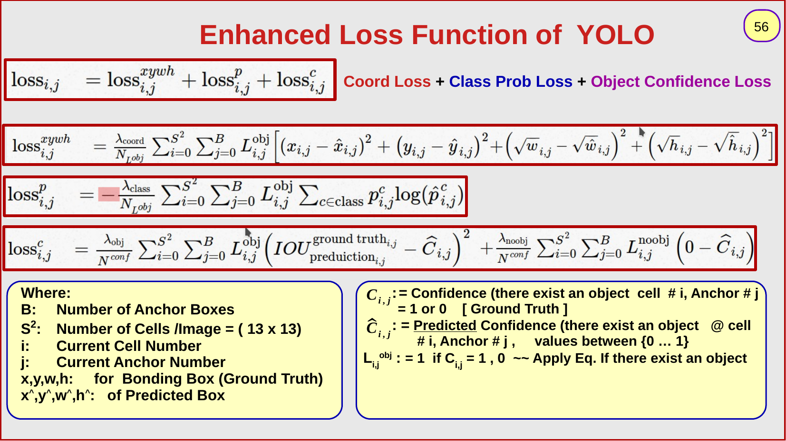
Class-probability loss (cross-entropy)
$$\text{loss}^{p}_{i,j} = -\tfrac{\lambda_{\text{class}}}{N_{L^{obj}}}\sum_{i=0}^{S^2}\sum_{j=0}^{B} L^{\text{obj}}_{i,j}\sum_{c\in\text{class}} p^{c}_{i,j}\log(\hat p^{c}_{i,j}).$$
Only counted on {cell, anchor} pairs that actually contain an object ($L^{\text{obj}}_{i,j}=1$).
Object-confidence loss
$$\text{loss}^{c}_{i,j} = \tfrac{\lambda_{\text{obj}}}{N^{conf}}\sum_{i,j} L^{\text{obj}}_{i,j}\Big(\text{IoU}^{\text{gt}}_{\text{pred}} - \hat C_{i,j}\Big)^2 \;+\; \tfrac{\lambda_{\text{noobj}}}{N^{conf}}\sum_{i,j} L^{\text{noobj}}_{i,j}\Big(0 - \hat C_{i,j}\Big)^2.$$
Trains $\hat C_{i,j}$ to match the IoU with the ground-truth box when an object exists, or to be 0 when no object exists.
Weights, normalisation, indicators
- $L^{\text{obj}}_{i,j} = 1$ if {cell $i$, anchor $j$} contains an object, else 0.
- $L^{\text{noobj}}_{i,j} = 1$ if $\max\text{IoU} < 0.6$ and $C_{i,j} = 0$ (truly empty), else 0.
- Suggested hyperparameters: $\lambda_{\text{coord}} = 5,\ \lambda_{\text{obj}} = 1,\ \lambda_{\text{noobj}} = 0.5,\ \lambda_{\text{class}} = 1$.
- $\lambda_{\text{noobj}} < \lambda_{\text{obj}}$ because the vast majority of cells contain no object — without down-weighting, the empty cells would dominate the gradient.
- $\lambda_{\text{coord}} = 5$ boosts the localisation signal because there are far fewer object-containing cells than empty ones.
Versions & loss-type evolution (quick reference)
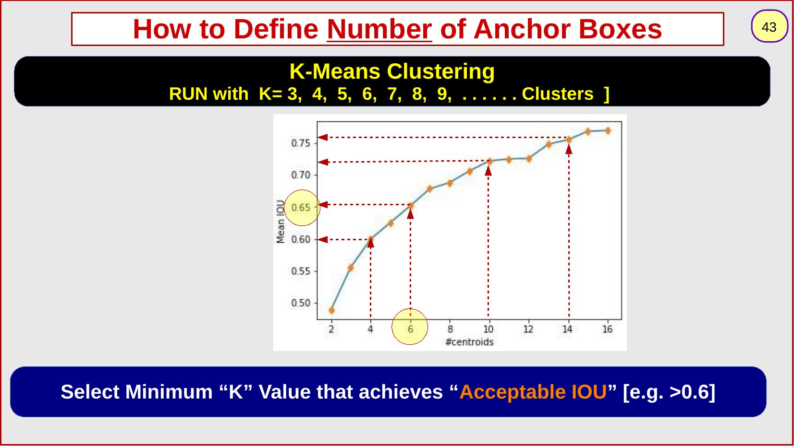
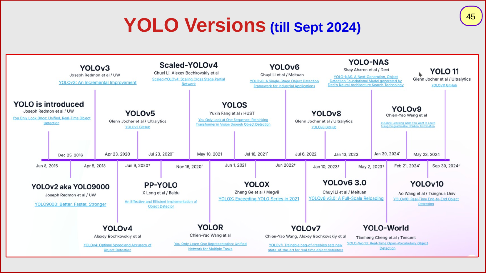
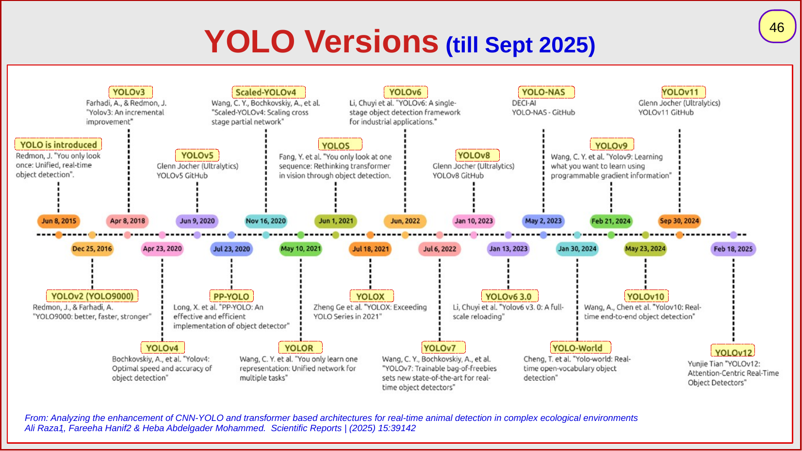
Practice quiz — Lecture 7
Answer
The single grid cell that contains the centre (midpoint) of the object's ground-truth bounding box. All other cells output $p_c=0$ for that object.Answer
- Shared classes: $19\times 19\times (5\cdot 5 + 80) = 361\times 105 = \mathbf{37{,}905}$.
- Per-anchor classes: $19\times 19\times 5\cdot(5 + 80) = 361\times 425 = \mathbf{153{,}425}$.
Answer
Anchor 3 (highest IoU 0.63). Its $p_c$ is set to 1; the other three anchors' $p_c$ slots stay 0.Answer
Cell side = 32 px. Cell = $(\lfloor 200/32\rfloor, \lfloor 145/32\rfloor) = (6, 4)$.$b_x = (200\bmod 32)/32 = 8/32 = 0.25$. $b_y = (145\bmod 32)/32 = 17/32 \approx 0.531$.